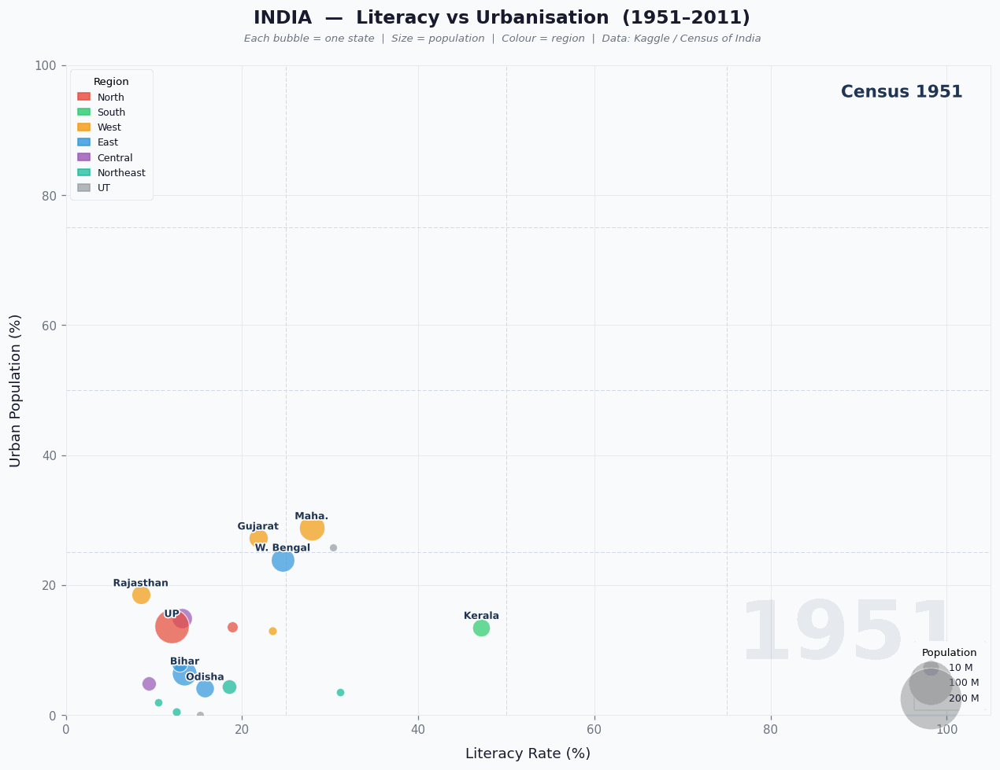

Animated bubble chart — 60 years of literacy, urbanisation & population across 35 states
How has India changed over 60 years of Census data? This project animates the relationship between literacy rate and urbanisation for every Indian state from 1951 to 2011. Each bubble represents one state — its size shows population, its colour shows region, and its position moves decade by decade, revealing stark divergences between Kerala and Bihar, between coastal metros and landlocked heartlands.
X axis = Literacy rate • Y axis = Urban population % • Bubble size = total population • Colour = geographic region. Ghost trails show where each state was in the previous Census.

India state demographics — Census 1951 to 2011 — 35 states • 7 decades • literacy vs urbanisation
From 1951, Kerala sits far to the right of every other state on literacy. By 2011 it reaches 94% literacy — near-universal — while simultaneously achieving the highest sex ratio (1084 females per 1000 males). The Kerala model of education-first development is visible in every frame.
Through all 7 decades, Bihar barely moves. Starting at 13.5% literacy and 6.4% urban in 1951, it reaches only 61.8% and 11.3% by 2011. Despite having India's third-largest population, it remains one of the least urbanised states — a stark outlier in every frame.
Maharashtra shows the most consistent rightward and upward movement of any large state. Starting at 28.8% urban in 1951 (already high due to Mumbai), it reaches 45.2% by 2011 while literacy climbs from 27.9% to 82.3%.
States like Mizoram and Nagaland achieve high literacy rates comparable to Kerala but remain overwhelmingly rural. This unique pattern — educated but not urban — reflects a distinctly different development path from the rest of India.
Smooth-step interpolation and glow effect — the key visual techniques:
# Smooth-step easing — bubbles accelerate then decelerate def smooth_step(t): return t * t * (3 - 2 * t) # Interpolate all state values between two census years for ti in range(N_INTERP): t = (ti + 1) / (N_INTERP + 1) ease = smooth_step(t) interp["Literacy"] = cur * (1-ease) + nxt * ease interp["Urban_Pct"] = cur * (1-ease) + nxt * ease # Glow ring — outer bubble at 1.6x size, low alpha ax.scatter(x, y, s=size * 1.6, c=color, alpha=0.12, edgecolors="none", zorder=2) # Main bubble on top ax.scatter(x, y, s=size, c=color, alpha=0.80, edgecolors="white", linewidths=0.6, zorder=3)